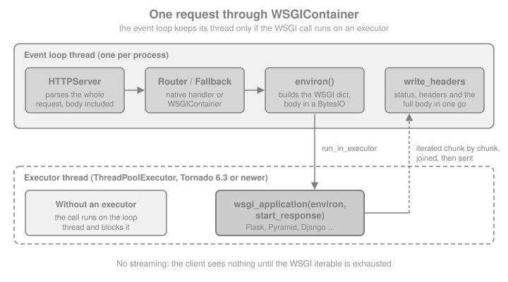

WSGI Interoperability
|
This content was generated with the assistance of AI and should be verified against the official documentation before being relied on in production. |
This page is written against Tornado 6.5.10 (released 2026-09-15) with Flask 3.1.3, Werkzeug 3.1.9 and Pyramid 2.1 on
Python 3.13, checked on 2026-10-07; every Python example was executed with those versions, on real loopback servers and
with AsyncHTTPTestCase. Tornado 6.6 is only available as the alpha 6.6a1 at that date, so anything about 6.6 is
upcoming, and no change to tornado.wsgi is announced for it in the sources consulted. Tornado 7.0 is announced to
change the default of WSGIContainer (see below). The page covers the one direction that Tornado supports,
a WSGI application running inside Tornado’s HTTP server, next to the Bookshelf Live handlers, and the direction it
does not support. It also says plainly when you should not do it: for a WSGI-only application a real WSGI server is
the better home. The matching deployment pages are
Flask: Deployment, WSGI Servers & Proxies and, in this
section, Introduction & Architecture, which explains why
Tornado is not a WSGI framework in the first place. The Pyramid section has its own deployment page,
Pyramid: Deployment.
Two Directions, Only One Supported
WSGI (PEP 3333) is a synchronous calling convention: a server calls app(environ, start_response) on a worker, and
the application returns an iterable of byte strings. Flask, Pyramid and synchronous Django are WSGI applications.
Tornado is not: its Application and RequestHandler are built for Tornado’s own HTTPServer and an event loop.
The tornado.wsgi module documentation states both halves of the rule.
| Direction | Supported? | How |
|---|---|---|
A WSGI application (Flask, Pyramid, Django) served by Tornado’s HTTP server |
Yes, with caveats |
|
A Tornado |
No, since 6.0 |
|
The container’s own documentation is blunt about its purpose: it exists to support both WSGI applications and native
RequestHandlers in a single process, and "WSGI-only applications are likely to be better off with a dedicated WSGI
server". That sentence is the thesis of this page. The legitimate uses are narrow.
-
Migration (a strangler pattern). An existing Flask or Django application keeps answering everything that has not been rewritten while the new real-time parts, such as the WebSocket chat and the live review feed, are added as native handlers in the same process and on the same port.
-
One process for a small internal tool. An admin interface written in Flask next to a few Tornado handlers, with low traffic and no need for a second deployment unit.
-
Tests and demos. Tornado’s HTTP server is a convenient in-process server for any WSGI callable.
For everything else, the legacy Flask Cookbook recipe "deploy Flask with Tornado" and similar older tutorials are not a good model. They predate the executor argument and put the entire application on the event loop thread.
What the Container Does with a Request
WSGIContainer implements the HTTPServer request-callback interface. Tornado’s server parses the complete request,
including its body, and hands an HTTPServerRequest to the container. The container turns it into a WSGI environ,
calls the application (on the event loop thread or on an executor), collects the body chunks the application
produces, and writes status, headers and the whole body at once.

Four properties follow from that flow and from the container’s source, and each one has a practical consequence.
-
The request body is fully buffered first.
wsgi.inputis aBytesIObuilt fromrequest.body. Tornado’smax_body_sizeandmax_buffer_sizelimits apply before the application sees anything, and@stream_request_bodydoes not exist on this path. -
The response is fully buffered too. The container joins every chunk, adds
Content-Length(unless the application set one) and a defaultContent-Typeoftext/html; charset=UTF-8when none is present, and sends everything at once. Streaming responses, Server-Sent Events and long polling from a WSGI application therefore arrive in one piece at the end (shown below). -
The status line is parsed into a code and a reason, and a
Server: TornadoServer/<version>header is added when the application did not setServer. Each request is logged on thetornado.accesslogger. -
start_responsereturns awritecallable that appends to the same buffer; applications that use it still work.
The first example starts the simplest possible server: a hand-written WSGI function behind HTTPServer. A small helper
that binds an unused loopback port is reused by every example on the page.
import asyncio
import contextlib
import time
from concurrent.futures import ThreadPoolExecutor
from tornado.httpclient import AsyncHTTPClient
from tornado.httpserver import HTTPServer
from tornado.testing import bind_unused_port
from tornado.wsgi import WSGIContainer
@contextlib.asynccontextmanager
async def serving(callback, **server_args):
"""Run an HTTPServer on a free loopback port and yield its base URL."""
sock, port = bind_unused_port()
server = HTTPServer(callback, **server_args)
server.add_sockets([sock])
try:
yield f"http://127.0.0.1:{port}"
finally:
server.stop()
await server.close_all_connections()
def shelf_status(environ, start_response):
body = b"Bookshelf Live: legacy WSGI endpoint\n"
start_response("200 OK", [("Content-Type", "text/plain")])
return [body]
async def hello():
async with serving(WSGIContainer(shelf_status)) as base:
response = await AsyncHTTPClient().fetch(base + "/")
print(response.code, response.headers["Content-Type"], response.headers["Content-Length"])
print(response.body.decode().strip())
assert response.body.startswith(b"Bookshelf Live")
assert response.headers["Server"].startswith("TornadoServer/")
asyncio.run(hello())Flask Next to Native Handlers with FallbackHandler
A WSGI application is a request callback, so it can sit anywhere a request callback fits. The docs recommend two
patterns: use tornado.routing to route between the WSGI application and a tornado.web.Application, or use the
Application as the top-level router and give it a catch-all FallbackHandler whose fallback argument is the
container. Tornado tries the rules in order, so the native routes come first and the fallback route is last. A
FallbackHandler with the pattern .* therefore catches every path the native handlers did not claim.
The Bookshelf Live example below keeps a legacy Flask application for the catalogue pages and adds a native
/api/feed handler. FeedHandler is an async def handler running on the event loop; the Flask view is ordinary
synchronous code.
from flask import Flask, jsonify
from tornado.web import Application, FallbackHandler, RequestHandler
legacy = Flask("bookshelf_legacy")
@legacy.get("/")
def catalogue():
return "<h1>Bookshelf catalogue (Flask)</h1>"
@legacy.get("/books/<int:book_id>")
def book_detail(book_id):
return jsonify(id=book_id, title="Dune", source="flask")
class FeedHandler(RequestHandler):
async def get(self):
await asyncio.sleep(0) # a real handler would await a queue or a database
self.write({"source": "tornado", "reviews": []})
def make_app(executor=None):
wsgi = WSGIContainer(legacy, executor=executor)
return Application(
[
(r"/api/feed", FeedHandler),
(r".*", FallbackHandler, {"fallback": wsgi}),
]
)
async def both():
async with serving(make_app()) as base:
client = AsyncHTTPClient()
feed = await client.fetch(base + "/api/feed")
detail = await client.fetch(base + "/books/7")
missing = await client.fetch(base + "/nope", raise_error=False)
print(feed.body.decode().strip())
print(detail.body.decode().strip())
print(missing.code)
assert b"tornado" in feed.body and b"flask" in detail.body
assert missing.code == 404
asyncio.run(both())A request that matches no Flask route gets Flask’s own 404 page, not Tornado’s. If Tornado should answer the unknown
paths instead, list every Flask prefix explicitly rather than using .*, as the next section does. The
tornado.routing module is documented at
Tornado: tornado.routing; this section’s
Routing page covers it in depth.
Routing by Prefix with RuleRouter
When the WSGI application owns a whole URL prefix, a RuleRouter with a PathMatches matcher is more precise than a
catch-all and does not need a placeholder handler class. A rule’s target can be a container (any request callback),
an Application or another router, so the two sides are siblings.
A rule that targets a container must not contain a capturing group. Tornado passes the groups of a matching pattern
to the target as path_args keyword arguments, and WSGIContainer.__call__ accepts only the request, so a pattern
such as /admin(/.*)? makes the server raise TypeError and the client sees a closed connection with no response.
Write /admin(?:/.*)?, with a non-capturing group, as in the example below.
Mounting under a prefix has a second trap. The container always sets SCRIPT_NAME to the empty string and PATH_INFO to
the full path, so Flask sees /admin/books and has no /admin route unless you add one. Two fixes work: register the
Flask routes with the prefix in them (for example through a blueprint with url_prefix), or wrap the Flask application
in Werkzeug’s DispatcherMiddleware, which moves the prefix from PATH_INFO into SCRIPT_NAME so that url_for
generates correct links. The example does the second.
from tornado.routing import AnyMatches, PathMatches, Rule, RuleRouter
from werkzeug.middleware.dispatcher import DispatcherMiddleware
admin = Flask("bookshelf_admin")
@admin.get("/")
def admin_home():
from flask import url_for
return jsonify(page="admin", books_url=url_for("books"))
@admin.get("/books")
def books():
return jsonify(items=["Dune", "Emma"])
def not_found_wsgi(environ, start_response):
start_response("404 Not Found", [("Content-Type", "text/plain")])
return [b"no such path\n"]
mounted = DispatcherMiddleware(not_found_wsgi, {"/admin": admin})
pool = ThreadPoolExecutor(max_workers=4)
router = RuleRouter(
[
Rule(PathMatches(r"/admin(?:/.*)?"), WSGIContainer(mounted, executor=pool)),
Rule(PathMatches(r"/api/feed"), Application([(r"/api/feed", FeedHandler)])),
]
)
async def routed():
async with serving(router) as base:
client = AsyncHTTPClient()
home = await client.fetch(base + "/admin/")
print(home.body.decode().strip())
feed = await client.fetch(base + "/api/feed")
print(feed.body.decode().strip())
other = await client.fetch(base + "/elsewhere", raise_error=False)
print(other.code)
assert b'"/admin/books"' in home.body # SCRIPT_NAME was set by the dispatcher
assert other.code == 404
asyncio.run(routed())Source: Werkzeug: Application Dispatcher
The executor Argument: the Difference Between Usable and Unusable
Without an executor, the WSGI application runs directly on the event loop thread. A view that sleeps, queries a
synchronous database driver or hashes a password freezes every other connection of the process, native ones included.
In Tornado 6.3 and later, WSGIContainer(app, executor=...) runs the application, and each step of iterating its
response, on the given concurrent.futures.Executor through IOLoop.run_in_executor. The documentation recommends a
ThreadPoolExecutor, says ProcessPoolExecutor is not supported, and tells you to verify first that the application
is thread-safe. Flask is, because its request, application and g objects are context-local, but your own module-level
globals and non-thread-safe client objects may not be.
The experiment sends four concurrent requests to a Flask view that sleeps for 0.3 seconds. With no executor they run one after another; with four threads they overlap.
slow = Flask("bookshelf_slow")
@slow.get("/slow")
def slow_view():
time.sleep(0.3) # stands in for a synchronous SQL query
return "done"
async def elapsed(executor, concurrent_requests=4):
async with serving(WSGIContainer(slow, executor=executor)) as base:
client = AsyncHTTPClient(force_instance=True)
started = time.perf_counter()
await asyncio.gather(*[client.fetch(base + "/slow") for _ in range(concurrent_requests)])
return time.perf_counter() - started
async def compare():
serial = await elapsed(None)
threaded = await elapsed(ThreadPoolExecutor(max_workers=4))
print(f"no executor: {serial:.2f}s four threads: {threaded:.2f}s")
assert serial > 1.0 and threaded < 0.9
asyncio.run(compare())On the measuring machine the first figure was about 1.2 seconds and the second about 0.3 seconds; the exact numbers vary
but the ratio is the point. The pool size is your concurrency limit for the WSGI side, in the way that the worker
count is for Gunicorn: with max_workers=4, the fifth simultaneous request waits for a free thread (the wait is
cheap, because it is a queue on the executor, not a blocked event loop). Size it from the application’s blocking
fraction and the database connection pool, not from the number of CPUs.
The container also reports the truth to the application: wsgi.multithread is true when an executor is configured and
false otherwise, and wsgi.multiprocess is always true.
Tornado 7.0 changes the default
The source documentation marks running without an executor as deprecated since 6.3: the default of running the WSGI application on the event loop thread "will change in Tornado 7.0 to use a thread pool by default". Pass an executor explicitly today and your behaviour will not change when 7.0 arrives. Tornado 6.5.10 emits no warning, so the deprecation is easy to miss.
The WSGI Environment Tornado Builds
WSGIContainer.environ(request) (an instance method since 6.3, and also the right method to override or wrap when you
need extra keys) fills the PEP 3333 variables from the HTTPServerRequest. Every request header becomes HTTP_ plus
the upper-cased name with dashes replaced by underscores, except Content-Type and Content-Length, which use the
standard unprefixed names.
| Variable | Value | Consequence |
|---|---|---|
|
From the request |
Normal |
|
Always the empty string |
Prefix mounting needs |
|
URL-decoded path, re-encoded as a latin-1 string as PEP 3333 requires |
Normal for WSGI applications |
|
|
With |
|
|
With |
|
Split from the |
Behind a proxy these describe the public host only if the proxy forwards |
|
|
No streaming of uploads; the body size is limited by |
|
|
Not Tornado’s logger; send application logs through |
|
|
Informational for the application |
Behind nginx: Proxy Headers
In production the process sits behind a reverse proxy (see the
introduction for the shape of that topology). The WSGI
application then needs the client address and scheme from the proxy’s headers. Tornado already offers that at the
server level: HTTPServer(..., xheaders=True) rewrites request.remote_ip and request.protocol before the container
builds the environ, so request.remote_addr and request.scheme in Flask are right without further middleware.
trusted_downstream (a list of proxy addresses) tells Tornado which hops to skip when it reads X-Forwarded-For.
Use one mechanism, not two. If you enable xheaders in Tornado and also wrap Flask in Werkzeug’s ProxyFix, the
header is processed twice, the second pass sees the first pass’s output as untrusted input, and a wrong hop count lets
a client spoof its own address. Only switch the proxy handling on when a proxy you control really sets the headers;
otherwise any client can send X-Forwarded-For itself.
inspect = Flask("bookshelf_inspect")
@inspect.get("/whoami")
def whoami():
from flask import request
return jsonify(
remote_addr=request.remote_addr,
scheme=request.scheme,
multithread=request.environ["wsgi.multithread"],
script_root=request.script_root,
)
async def proxied():
wsgi = WSGIContainer(inspect, executor=ThreadPoolExecutor(2))
async with serving(wsgi, xheaders=True) as base:
response = await AsyncHTTPClient().fetch(
base + "/whoami",
headers={"X-Forwarded-For": "203.0.113.9", "X-Scheme": "https"},
)
print(response.body.decode().strip())
assert b"203.0.113.9" in response.body and b"https" in response.body
assert b'"multithread":true' in response.body
asyncio.run(proxied())What a WSGI Application Cannot Do Here
The container is a bridge to the synchronous world, so the features that make Tornado interesting stop at the bridge.
No streaming
The container collects every chunk the application yields and writes one response with a computed Content-Length.
A Flask streaming view that yields three parts 0.2 seconds apart is delivered as a single chunk after about 0.6 seconds.
Server-Sent Events, long polling and any "download while generating" view therefore do not stream; write those as
native handlers (see Streaming, Long Polling & SSE).
streamer = Flask("bookshelf_stream")
@streamer.get("/stream")
def stream():
from flask import Response
def parts():
for number in range(3):
time.sleep(0.2)
yield f"part {number}\n"
return Response(parts(), mimetype="text/plain")
async def buffered():
async with serving(WSGIContainer(streamer, executor=ThreadPoolExecutor(2))) as base:
arrivals = []
started = time.perf_counter()
def on_chunk(data):
arrivals.append((round(time.perf_counter() - started, 1), data))
response = await AsyncHTTPClient().fetch(base + "/stream", streaming_callback=on_chunk)
print(arrivals, response.headers["Content-Length"])
assert len(arrivals) == 1 and arrivals[0][0] >= 0.5
asyncio.run(buffered())No WebSockets, no async
A WSGI callable has no way to take over a connection, so a Flask view cannot be a WebSocket endpoint under the
container. The documentation says explicitly that efficient long polling and WebSockets are not available in WSGI
mode. Put them in WebSocketHandler classes routed before the fallback (see
WebSockets). An async def Flask view does not make the container asynchronous
either: with the flask[async] extra, Flask runs it to completion in its own event loop inside the worker thread, so it holds that executor thread
for its whole duration.
Tornado’s application features do not reach the WSGI side
FallbackHandler forwards the raw request to the container, which writes directly to the connection. The Application
settings and the RequestHandler machinery that Tornado normally wraps around a response are bypassed. That includes:
-
compress_response(the output transform that gzips responses), -
the Tornado CSRF logic of the legacy views: Flask forms need their own protection (Flask-WTF), and Tornado’s
_xsrftoken is neither rendered into them nor understood by them, -
@authenticatedandget_current_user, so the legacy side needs its own login (a Tornado signed cookie is not a Flask session; they use different formats and keys), -
default_handler_class,log_functionfor access logging,static_pathand template settings.
There is one exception that surprises people. FallbackHandler is a RequestHandler, and Tornado checks the XSRF
token of every unsafe request (anything but GET, HEAD and OPTIONS) before it calls prepare, where the fallback
forwards the request. With xsrf_cookies=True a POST to a Flask view behind a FallbackHandler is rejected with 403
before Flask runs, and the legacy form cannot supply the _xsrf token. A container mounted through a RuleRouter
rule never goes through a RequestHandler, so no check happens at all and Flask’s own protection is the only one.
Pick the mounting style on purpose.
The next example shows all three facts: a POST to a native handler and to a Flask view behind FallbackHandler
(both 403), the same Flask view mounted through a router (200), and a response that stays uncompressed although
compress_response=True.
import secrets
postable = Flask("bookshelf_post")
@postable.post("/legacy/reviews")
def legacy_post():
return jsonify(saved=True)
@postable.get("/legacy/big")
def legacy_big():
return "x" * 5000
class NativeReviews(RequestHandler):
def post(self):
self.write({"saved": True})
async def bypass():
container = WSGIContainer(postable, executor=ThreadPoolExecutor(2))
settings = dict(
xsrf_cookies=True,
compress_response=True,
cookie_secret=secrets.token_hex(32),
)
behind_fallback = Application(
[
(r"/api/reviews", NativeReviews),
(r".*", FallbackHandler, {"fallback": container}),
],
**settings,
)
via_router = RuleRouter(
[
Rule(PathMatches(r"/legacy/.*"), container),
Rule(AnyMatches(), behind_fallback),
]
)
async with serving(via_router) as base:
client = AsyncHTTPClient()
native = await client.fetch(base + "/api/reviews", method="POST", body="x=1", raise_error=False)
routed = await client.fetch(base + "/legacy/reviews", method="POST", body="x=1", raise_error=False)
big = await client.fetch(base + "/legacy/big", headers={"Accept-Encoding": "gzip"})
print(native.code, routed.code, big.headers.get("Content-Encoding"), big.headers["Content-Length"])
assert native.code == 403 and routed.code == 200
assert big.headers.get("Content-Encoding") is None
async with serving(behind_fallback) as base:
client = AsyncHTTPClient()
fallback = await client.fetch(base + "/legacy/reviews", method="POST", body="x=1", raise_error=False)
print(fallback.code)
assert fallback.code == 403
asyncio.run(bypass())Treat the WSGI side as a separate application that happens to share a port. Apply the security headers, CSRF protection, authentication and compression to it with its own middleware, or terminate compression and TLS at the reverse proxy so that both sides benefit equally.
The Same Container Serves Pyramid and Others
Nothing in the container is Flask-specific. Pyramid's Configurator.make_wsgi_app() returns a WSGI callable that
drops in exactly like legacy above, and so does Django’s get_wsgi_application(). The example serves a single-file
Pyramid application on the same server as a native handler.
from pyramid.config import Configurator
from pyramid.response import Response as PyramidResponse
def shelves(request):
return PyramidResponse("Pyramid shelves", content_type="text/plain")
with Configurator() as config:
config.add_route("shelves", "/shelves")
config.add_view(shelves, route_name="shelves")
pyramid_app = config.make_wsgi_app()
async def pyramid_beside_tornado():
app = Application(
[
(r"/api/feed", FeedHandler),
(r".*", FallbackHandler, {"fallback": WSGIContainer(pyramid_app, executor=ThreadPoolExecutor(2))}),
]
)
async with serving(app) as base:
client = AsyncHTTPClient()
print((await client.fetch(base + "/shelves")).body.decode())
print((await client.fetch(base + "/api/feed")).body.decode().strip())
asyncio.run(pyramid_beside_tornado())For Django, the Tornado documentation’s own example wraps django.core.handlers.wsgi.WSGIHandler(); the recommended
modern form is get_wsgi_application() from django.core.wsgi. The sync-versus-async question is the same: Django’s
async views would not run asynchronously under the container.
The Other Direction Does Not Exist
Tornado 6.0 removed tornado.wsgi.WSGIApplication, the adapter that let a Tornado Application run under a WSGI
server, together with the callback-style APIs it depended on. Old tutorials that say "Tornado also supports WSGI
deployment" refer to that removed class. A modern Tornado Application has no __call__(environ, start_response)
signature; calling it that way fails.
import tornado.wsgi
print([name for name in dir(tornado.wsgi) if not name.startswith("_")])
assert not hasattr(tornado.wsgi, "WSGIApplication")
try:
Application([]).__call__({}, lambda *args: None)
except TypeError as error:
print("not a WSGI callable:", type(error).__name__)If you need to host Tornado handlers inside an existing WSGI deployment, the realistic options are to run Tornado as its own process behind the same nginx and route by path, or to rewrite the handlers as views of the WSGI framework and give up the asynchronous features. The Tornado process model, one process per CPU behind nginx, is the one described by the official Running and deploying guide.
When to Use This and When to Use a Real WSGI Server
| Situation | Prefer | Why |
|---|---|---|
A Flask or Pyramid application and nothing else |
Gunicorn, Waitress, uWSGI or mod_wsgi |
Mature worker models, graceful reloads, worker recycling, timeouts and proper streaming; see Flask deployment |
Legacy WSGI pages plus new WebSocket, SSE or long-polling features in one codebase |
|
One process and one port during a migration, with the WSGI side offloaded to threads |
A Tornado app and a Flask app that share nothing |
Two processes behind nginx |
Independent scaling, restarts and failure domains; no bridge at all |
The legacy application is Flask and the new code is ASGI |
An ASGI application that mounts it with |
See the FastAPI section for the pattern, in Sub-Applications, WSGI & GraphQL |
Whatever you choose, keep these pitfalls in mind.
-
Never run the container without an executor under real traffic; one slow view stalls the whole process.
-
One event loop thread still parses requests, buffers bodies and writes responses, so very large uploads and downloads through the container are costly.
-
The thread pool must be sized for the blocking resources behind it, such as database connections.
-
Anything the WSGI application starts in the background (threads, scheduler libraries) lives inside the Tornado process; use a real worker for those, such as the patterns in the Scheduling section.
-
No debug mode of the legacy framework (Flask’s
debug, Pyramid’spyramid.reload_templates) belongs in the shared process; leave the framework in its production configuration. -
Each Tornado process has its own WSGI application instance, so per-process state (in-memory caches, counters) is not shared across
fork_processeschildren.
Testing Both Sides in One Test Case
AsyncHTTPTestCase.get_app() can return the combined application or a router, so a single test class exercises the
routing between native and WSGI handlers. Test the Flask views alone with Flask’s test_client() for speed, and keep a
few integration tests like the one below for the seams: route order, the executor, and headers the container adds.
import unittest
from tornado.testing import AsyncHTTPTestCase
class CombinedTest(AsyncHTTPTestCase):
def get_app(self):
return make_app(executor=ThreadPoolExecutor(max_workers=2))
def test_native_route_wins(self):
response = self.fetch("/api/feed")
self.assertEqual(response.code, 200)
self.assertIn(b"tornado", response.body)
def test_flask_handles_the_rest(self):
response = self.fetch("/books/3")
self.assertEqual(response.code, 200)
self.assertIn(b"flask", response.body)
self.assertTrue(response.headers["Server"].startswith("TornadoServer/"))
suite = unittest.defaultTestLoader.loadTestsFromTestCase(CombinedTest)
result = unittest.TextTestRunner(verbosity=0).run(suite)
assert result.wasSuccessful()The production entry point is the same combined application started with asyncio.run, one process per CPU behind
nginx as described in the official running guide; the example is not executed because it would run forever.
# norun
import os
async def main():
app = make_app(executor=ThreadPoolExecutor(max_workers=int(os.environ.get("WSGI_THREADS", "8"))))
server = HTTPServer(app, xheaders=True) # only behind a proxy that you control
server.listen(int(os.environ.get("PORT", "8888")), address="127.0.0.1")
await asyncio.Event().wait()
if __name__ == "__main__":
asyncio.run(main())Source: Tornado: Running and deploying
Version History
| Version | Change to WSGI interoperability |
|---|---|
6.0 (2019) |
|
6.3 (2023) |
|
6.5.x |
No change to |
6.6 (upcoming) |
Python 3.11 minimum; no change to |
7.0 (announced) |
The default for |
Source: Tornado: Release notes